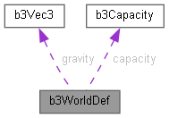

World definition used to create a simulation world. Must be initialized using b3DefaultWorldDef. More...
#include <types.h>

Data Fields | |
| b3Vec3 | gravity |
| Gravity vector. Box3D has no up-vector defined. | |
| float | restitutionThreshold |
| Restitution speed threshold, usually in m/s. | |
| float | hitEventThreshold |
| Hit event speed threshold, usually in m/s. | |
| float | contactHertz |
| Contact stiffness. Cycles per second. Increasing this increases the speed of overlap recovery, but can introduce jitter. | |
| float | contactDampingRatio |
| Contact bounciness. | |
| float | contactSpeed |
| This parameter controls how fast overlap is resolved and usually has units of meters per second. | |
| float | maximumLinearSpeed |
| Maximum linear speed. Usually meters per second. | |
| b3FrictionCallback * | frictionCallback |
| Optional mixing callback for friction. The default uses sqrt(frictionA * frictionB). | |
| b3RestitutionCallback * | restitutionCallback |
| Optional mixing callback for restitution. The default uses max(restitutionA, restitutionB). | |
| bool | enableSleep |
| Can bodies go to sleep to improve performance. | |
| bool | enableContinuous |
| Enable continuous collision. | |
| uint32_t | workerCount |
| Number of workers to use with the provided task system. | |
| b3EnqueueTaskCallback * | enqueueTask |
| function to spawn task | |
| b3FinishTaskCallback * | finishTask |
| function to finish a task | |
| void * | userTaskContext |
| User context that is provided to enqueueTask and finishTask. | |
| void * | userData |
| User data associated with a world. | |
| b3CreateDebugShapeCallback * | createDebugShape |
| Used to create debug draw shapes. | |
| b3DestroyDebugShapeCallback * | destroyDebugShape |
| Used to destroy debug draw shapes. This is called when a shape is modified or destroyed. | |
| void * | userDebugShapeContext |
| This is passed to the debug shape callbacks to provide a user context. | |
| b3Capacity | capacity |
| Optional initial capacities. | |
| int | internalValue |
| Used internally to detect a valid definition. DO NOT SET. | |
World definition used to create a simulation world. Must be initialized using b3DefaultWorldDef.
| b3Capacity b3WorldDef::capacity |
Optional initial capacities.
| float b3WorldDef::contactDampingRatio |
Contact bounciness.
Non-dimensional. You can speed up overlap recovery by decreasing this with the trade-off that overlap resolution becomes more energetic.
| float b3WorldDef::contactHertz |
Contact stiffness. Cycles per second. Increasing this increases the speed of overlap recovery, but can introduce jitter.
| float b3WorldDef::contactSpeed |
This parameter controls how fast overlap is resolved and usually has units of meters per second.
This only puts a cap on the resolution speed. The resolution speed is increased by increasing the hertz and/or decreasing the damping ratio.
| b3CreateDebugShapeCallback* b3WorldDef::createDebugShape |
Used to create debug draw shapes.
This is called when a shape is first drawn using b3DebugDraw.
| b3DestroyDebugShapeCallback* b3WorldDef::destroyDebugShape |
Used to destroy debug draw shapes. This is called when a shape is modified or destroyed.
| bool b3WorldDef::enableContinuous |
Enable continuous collision.
| bool b3WorldDef::enableSleep |
Can bodies go to sleep to improve performance.
| b3EnqueueTaskCallback* b3WorldDef::enqueueTask |
function to spawn task
| b3FinishTaskCallback* b3WorldDef::finishTask |
function to finish a task
| b3FrictionCallback* b3WorldDef::frictionCallback |
Optional mixing callback for friction. The default uses sqrt(frictionA * frictionB).
| b3Vec3 b3WorldDef::gravity |
Gravity vector. Box3D has no up-vector defined.
| float b3WorldDef::hitEventThreshold |
Hit event speed threshold, usually in m/s.
Collisions above this speed can generate hit events if the shape also enables hit events.
| int b3WorldDef::internalValue |
Used internally to detect a valid definition. DO NOT SET.
| float b3WorldDef::maximumLinearSpeed |
Maximum linear speed. Usually meters per second.
| b3RestitutionCallback* b3WorldDef::restitutionCallback |
Optional mixing callback for restitution. The default uses max(restitutionA, restitutionB).
| float b3WorldDef::restitutionThreshold |
Restitution speed threshold, usually in m/s.
Collisions above this speed have restitution applied (will bounce).
| void* b3WorldDef::userData |
User data associated with a world.
| void* b3WorldDef::userDebugShapeContext |
This is passed to the debug shape callbacks to provide a user context.
| void* b3WorldDef::userTaskContext |
User context that is provided to enqueueTask and finishTask.
| uint32_t b3WorldDef::workerCount |
Number of workers to use with the provided task system.
Box3D performs best when using only performance cores and accessing a single L2 cache. Efficiency cores and hyper-threading provide little benefit and may even harm performance.